Temas dos Dados¶
O catálogo agrupa os dados em cinco categorias temáticas. Esta página percorre cada uma delas e o que nelas encontra. Os procedimentos de pré-visualização, adição e estilização são iguais para todos os conjuntos de dados — ver Catálogo de Dados.
Natural Basin Characteristics (Características Naturais da Bacia)¶
Ao abrir o menu pendente desta categoria são reveladas as suas subcoleções.
Physiography (Fisiografia)¶
Inclui a elevação e topografia, os limites das bacias e sub-bacias, a rede de drenagem e os dados de nuvem de pontos 3D.


Figura 19: Explorar os conjuntos de dados Natural Basin Characteristics.

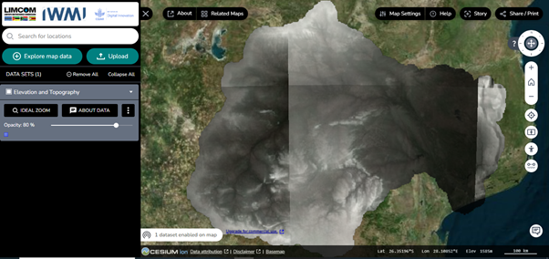

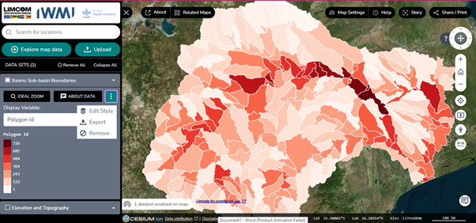
Vale a pena conhecer três controlos nesta vista:
- Menu pendente — apresenta funcionalidades do conjunto de dados, como Ideal Zoom (ampliação ideal), detalhes dos dados e variáveis de visualização.
- Ícone de três pontos — permite editar o estilo do conjunto de dados, exportar o mapa, ou remover o conjunto da vista do mapa e da área de trabalho.
- Ícones verticais — situados ao longo da margem direita do mapa; passe o cursor sobre qualquer um deles para ver a descrição da sua função.

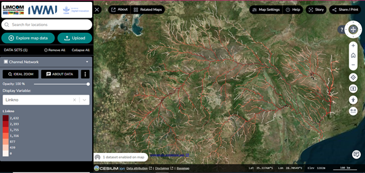
O controlo display variable dá também acesso à representação gráfica e à filtragem dos dados.
3D point clouds (Nuvens de pontos 3D)¶
Dados de nuvem de pontos 3D de alta resolução para sistemas fluviais da África do Sul, abrangendo atualmente o Rio Oliphants e o Sistema do Rio Crocodile (Superior e Inferior). Os dados foram recolhidos por levantamento com drone.

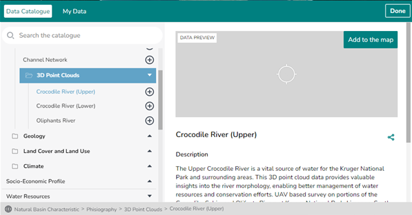
Clique num conjunto de dados para o pré-visualizar e adicionar ao mapa. Por baixo da pré-visualização encontra a descrição detalhada e os restantes metadados.
Land cover and land use (Ocupação e uso do solo)¶
Contém os conjuntos de dados Land Use (Uso do solo), Irrigated Mapping (Cartografia de áreas irrigadas) e Vegetation Condition Index (VCI) (Índice de Condição da Vegetação).

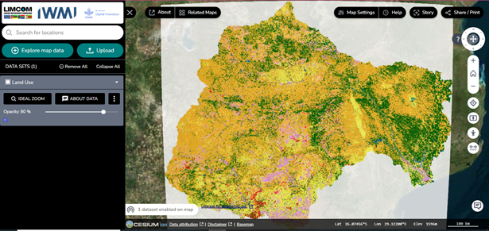
Alguns destes conjuntos de dados oferecem funcionalidades avançadas:
- Séries temporais — em conjuntos como a cartografia de áreas irrigadas, utilize os controlos temporais por baixo da vista do mapa e no painel da área de trabalho. As setas esquerda e direita avançam e recuam no tempo.
- Estilos de mapa — altere e personalize os estilos conforme necessário, para uma visualização flexível.

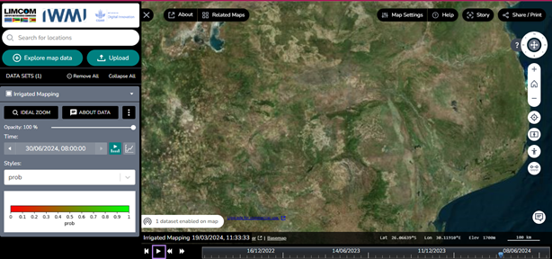

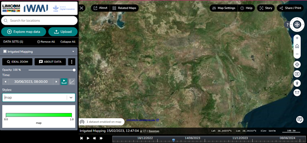

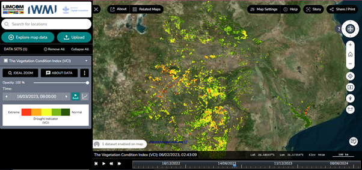
Climate (Clima)¶
Contém CHIRPS Historical Rainfall (Precipitação histórica CHIRPS), Rainfall Monitoring and Forecast (Monitorização e previsão de precipitação) e Rainfall Anomaly Circle Charts (Gráficos circulares de anomalia da precipitação).

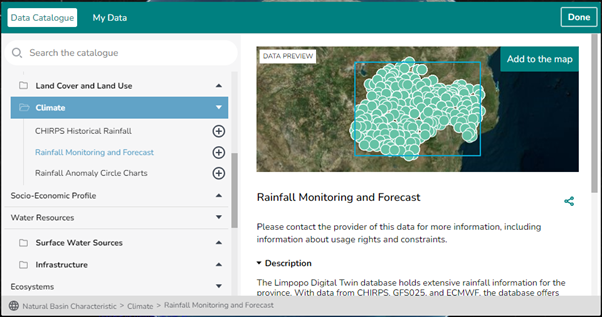

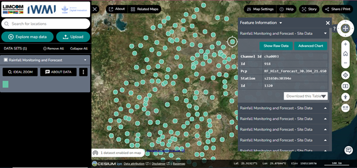
Clique nos dados para obter mais informação sobre cada elemento, incluindo os dados brutos e um gráfico avançado.

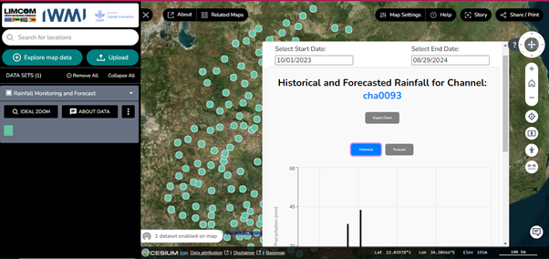

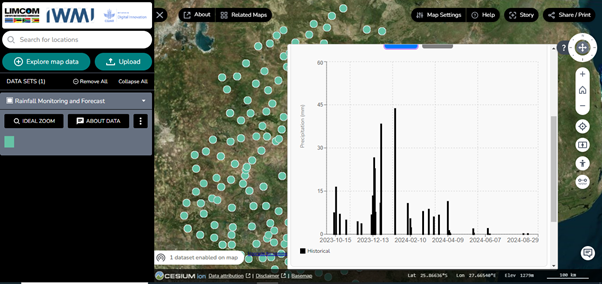

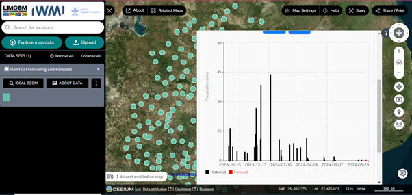

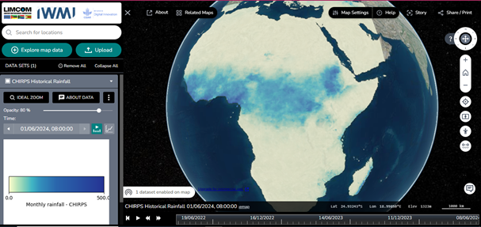
Socio-Economic Profile (Perfil Socioeconómico)¶
Dados sobre as condições socioeconómicas da bacia, incluindo população e outros fatores demográficos.

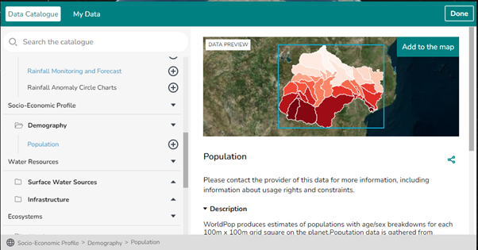
Clique em Data Preview para pré-visualizar o mapa.


Figura 35: Dados de população na vista do mapa, desenhados segundo a variável de visualização selecionada.


Figura 36: Dados de população na vista do mapa para uma variável de visualização diferente.
O conjunto de dados demográficos pode ser estilizado a partir do menu pendente display: desativar totalmente a estilização, ou estilizar por sub-bacia, área, identificador do polígono ou população.
Water Resources (Recursos Hídricos)¶
Conjuntos de dados sobre a disponibilidade, distribuição e utilização dos recursos hídricos na região:
- Surface Water Sources (Fontes de água superficial)
- Infrastructure (Infraestruturas)

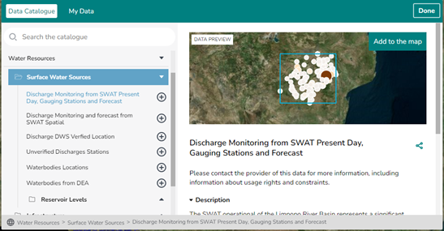
Os restantes conjuntos de dados desta categoria exploram-se da mesma forma.

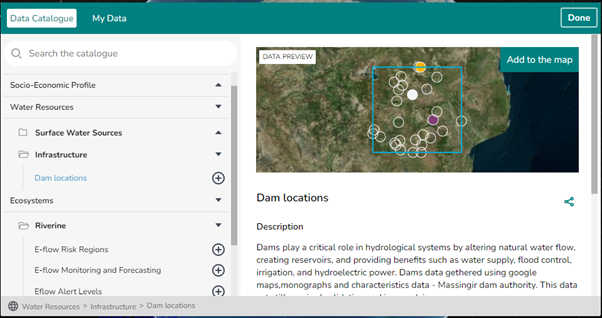
Ecosystems (Ecossistemas)¶
Conjuntos de dados relativos aos ecossistemas da bacia do Rio Limpopo:
| Conjunto de dados | Conteúdo |
|---|---|
| E-flow Regions | As várias regiões de caudal ecológico |
| E-flow Monitoring and Forecasting | Caudais ecológicos atuais e previstos |
| E-flow Alert Levels | Os diferentes níveis de alerta de caudal ecológico |
| SWAT Incremental Contributions | Contribuições incrementais do modelo SWAT |
| E-flow Warnings | Avisos relativos às condições de caudal ecológico |

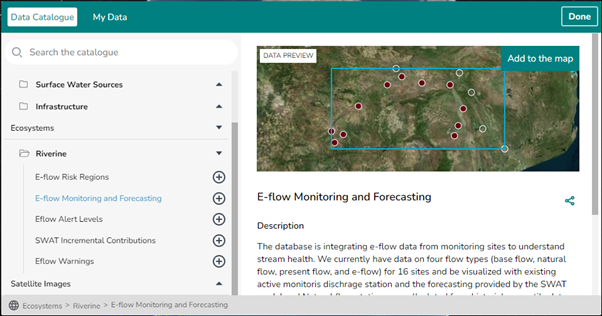
Satellite Images (Imagens de Satélite)¶
Imagens de satélite para deteção remota e monitorização ambiental, incluindo Rolling Monthly GeoMAD (Sentinel-2) e o resumo integral Water Observations from Space.

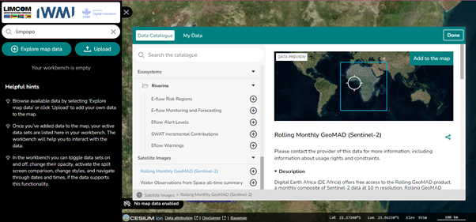